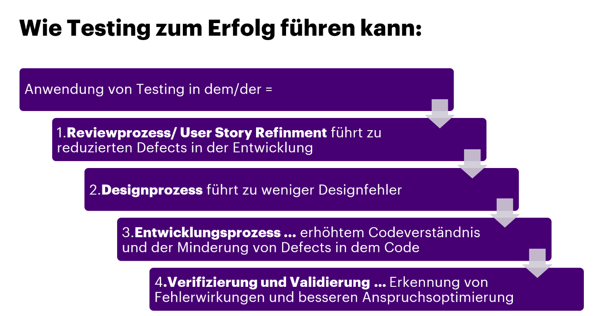
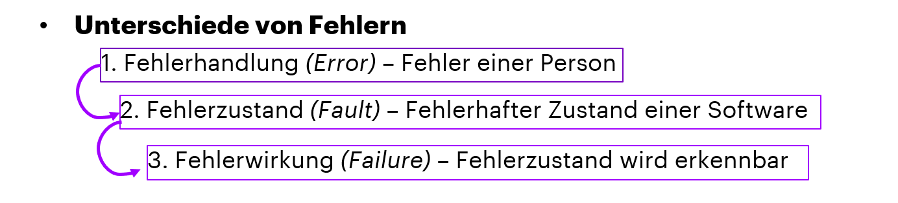
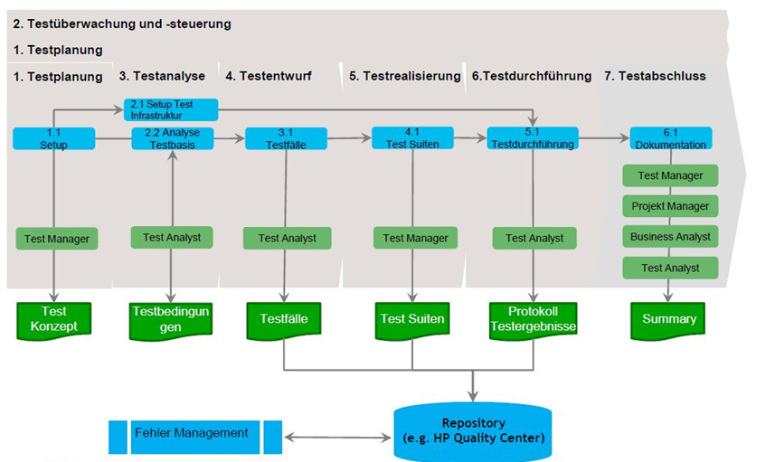

Testing
Was ist Testing?
Testen ist ganz, wie es das Wort schon sagt, das “Ausprobieren” eines Programms, beziehungsweise eines Systems.
Das Ziel solcher Tests ist es Vertrauen zur Qualität des getesteten Systems zu erzeugen und Informationen dazu zu erhalten. Dadurch sollen aber auch Fehler,
sowohl aufgedeckt, als auch vorgebeugt werden, sodass die Anforderungen der “Stakeholder” (=Interessensgruppen) erfüllt werden.
Welche Testziele gibt es? Allgemein wird zwischen den operativen und informellen Testzielen unterschieden. Bei den sogenannten operativen Testzielen versucht man Fehler im System zu finden, und dessen Funktionalität hinzuweisen. Bei den informellen Testzielen hingegen erzeugt man Vertrauen und versucht neue Informationen zu bekommen. Beide Arten der Testziele gehen Hand in Hand und können nur gemeinsam funktionieren. Softwaretesting führt dementsprechend zur Steigerung der Qualität und Senkung des Risikos von Fehlern.

Wie entstehen Fehler?Die wohlhäufigste Fehlerhandlung entsteht durch fehlerhafte Arbeit durch Personen. Menschen sind nun einmal keine Maschinen und durch die hohe Komplexität entstehen nun mal Fehler. Daran gekoppelt sind auch, die teilweise unklar definierten Anforderungen, welche wir, hier bei Accenture, mithilfe unserer vielseitigen Tools und Methoden auf das Minimum runterbrechen.


Wie läuft Testing ab?
Im Allgemeinen läuft ein Testing in etwa in der Reihenfolge der folgenden Abbildung ab.
Zunächst einmal scheint es etwas verwirrend, aber im Laufe des Kickstarts werdet ihr die
einzelnen Schritte mithilfe unseres jungen und kompetenten Team verstehen.
Testtechniken
Statische Testtechniken finden Fehlerzustände im Softwarequellcode und
verbessern die Konsistenz/Qualität. Typisch gefundene statisch Fehler sind
z.B. Anforderungsfehler, Designfehler, Programmierfehler etc.
Dynamische Testechniken finden Fehlerwirkungen und richten ihren Fokus auf das sichtbare Verhalten.

Quiz hier!